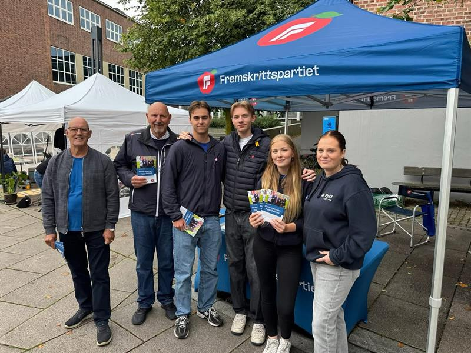

Verv og rolle
Jeg er styremedlem i FpU Moss og Omegn. Rollen innebærer deltakelse i styremøter, oppfølging av medlemmer, planlegging av aktiviteter og bidrag til strategiske beslutninger.


Debattinnlegg
Jeg skriver debattinnlegg for å fremme FpU sine standpunkter og bidra til offentlig politisk debatt på både lokale og nasjonale arenaer.

Skolevalgkampen 2025
Under skolevalgkampen deltar jeg aktivt på stands, skolebesøk og arrangementer for å engasjere unge velgere og spre FpU sitt budskap.